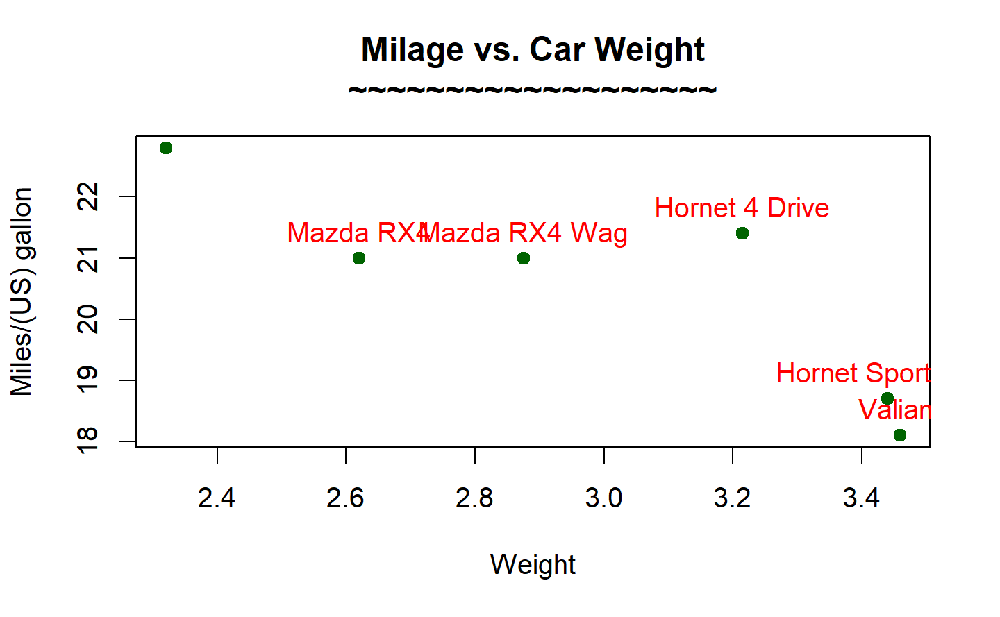
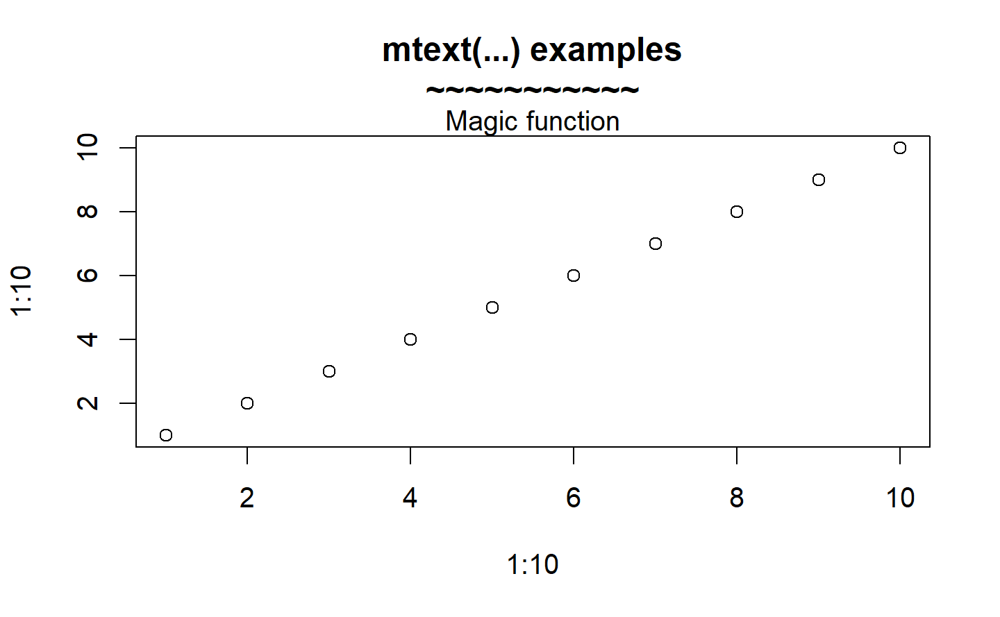
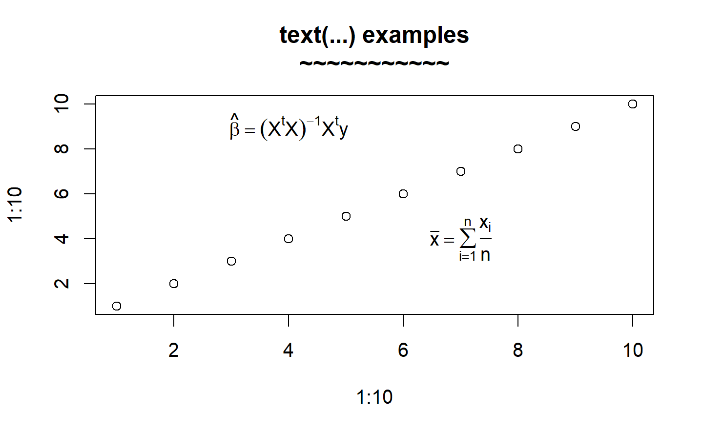
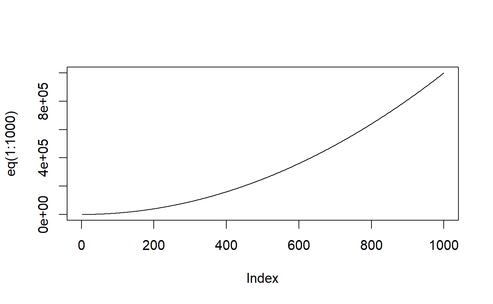
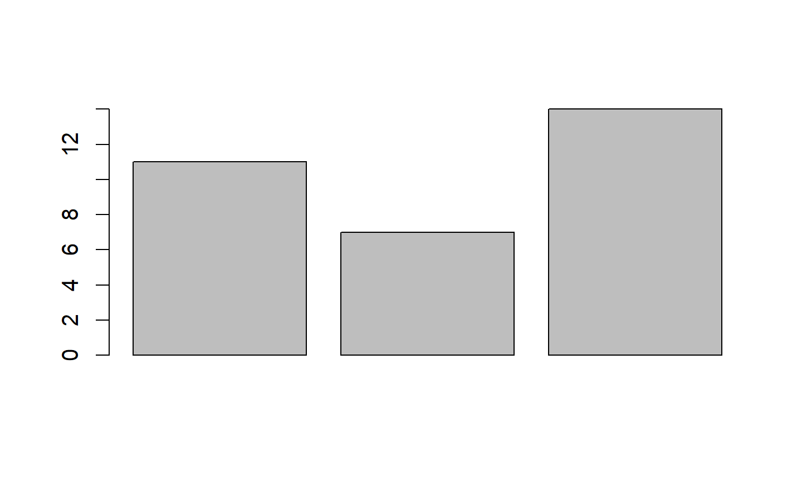

Chapter 10 更多繪圖
10.1 Add texts within the graph
The text() function can be used to draw text inside the plotting area. A simplified format of the function is :
text(x, y, labels)
x and y: 文字座標;
labels: 例如 “a label”
pos: 下左上右，1234
cex: 放大倍數，例如，0.65。
範例 :
d<-head(mtcars)
plot(d[,'wt'], d[,'mpg'],
main="Milage vs. Car Weight\n~~~~~~~~~~~~~~~~~~~",
xlab="Weight", ylab="Miles/(US) gallon",
pch=19, col="darkgreen")
text(d[,'wt'], d[,'mpg'], row.names(d), cex=1,pos=3,col="red") 
10.1.1 Add text in the margins of the graph
在圖形周圍給文字:
mtext(text, side=3)
text : 例如“a label”
side : 哪一側 :
順時針
1: 下
2: 左
3: 上
4: 又
範例 :
plot(1:10, 1:10,
main="mtext(...) examples\n~~~~~~~~~~~")
mtext("Magic function", side=3)
10.1.2 Add mathematical annotation to a plot
plot(1:10, 1:10,
main="text(...) examples\n~~~~~~~~~~~")
text(4, 9, expression(hat(beta) == (X^t * X)^{-1} * X^t * y))
text(7, 4, expression(bar(x) == sum(frac(x[i], n), i==1, n)))
10.2 函數畫圖
eq = function(x){x*x}
plot(eq(1:1000), type='l') 問題是如果x座標的增加不是1單位?
x<-seq(1,10,0.1)
y<-exp(x)
x<-y
eq = function(x){x*x}
plot(x,eq(x), type='l')
eq = function(x){x*x}
curve(eq, from=1, to=50, xlab="x", ylab="y") 問題:解釋為何錯誤
問題:解釋為何錯誤
eq = function(x){x*x}
y<-eq(1:50)
curve(y, xlab="x", ylab="y")Error in y(x):
沒有這個函數 "y"
問題:如何修正下面的錯誤?
eq = function(x){x*x}
z<-1:50
curve(eq(z), xlab="x", ylab="y")solution:
10.3 plot example
正常
polyred = curve(dnorm(x), xlim = c(-4,4))
polygon(polyred$x, polyred$y, col = "red")
❓ curv 高階指令？
eq = function(x){x*x}
y<-eq(1:50)
curve(eq, 1,50,xlab="x", ylab="y",lwd=5,col="yellow")
polygon(1:50,y,lty=2,col="red")
eq = function(x){x*x}
y<-eq(1:50)
curve(eq, 1,50,xlab="x", ylab="y",lwd=5,col="yellow")
polygon(c(1:50,50),c(y,0),lty=2,col="red") 💯 ⭕ 第一個點和最後一個點會連在一起。然後填色。
💯 ⭕ 第一個點和最後一個點會連在一起。然後填色。